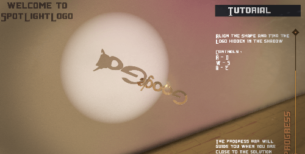
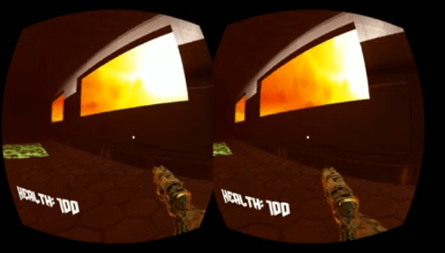

Game Mechanics
Cloning Camera
 Cloning
camera is a technique that uses a secondary camera to copy its view and
generate an image that can later be used to place a similar geometry in
the 3d space behind it.
Cloning
camera is a technique that uses a secondary camera to copy its view and
generate an image that can later be used to place a similar geometry in
the 3d space behind it.
Destructable walls
 An
impelemtnation of destructable walls inspired by Rainbow Six Siege.
With the use of mesh boolean operators and collision masks, this
mechanic has become possible.
An
impelemtnation of destructable walls inspired by Rainbow Six Siege.
With the use of mesh boolean operators and collision masks, this
mechanic has become possible.
Shadow Projection
Shadow projection is a mechanic that uses the shadow casted from an object and checks if it matches a specific shape.
Mobile VR controller
Although Mobile VR exists for a while, finding a suitable way to control a character with the mobile phone alone is a not popular, the Mobile VR controller uses the headset orientation to decide whether to move, swap weapons, or to pause the game.
Other Mechanics